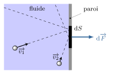

Dans ce cours, on s’intéresse au champ de pression au sein d’un fluide, notamment lorsqu’il
est au repos en présence d’un champ de force extérieure.
Introduction
Le terme fluide désigne un comportement qui s’oppose au comportement élastique ou plastique
associé aux solides. Par définition, on dit que la matière est fluide lorsqu’elle se
déforme aussi longtemps que lui sont appliquées des contraintes tangentielles. En termes
simples on peut dire qu’un fluide coule quand un solide se déforme.
Fondamentalement, le comportement fluide est lié, au niveau moléculaire, à l’absence d’ordre
à longue portée (contrairement aux cristaux) et à l’existence d’un chaos moléculaire
(contrairement aux solides). Ces propriétés se retrouvent notamment chez les gaz et les
liquides.
Plusieurs approches sont possibles pour décrire un fluide.
L’approche Dynamique Moléculaire :
On peut chercher le comportement de \(N\) molécules en résolvant de façon numérique les
équations de la mécanique du point appliquées aux \(N\) corps. Bien entendu, la limitation
des ordinateurs, impose \(N\) petit. À l’heure actuelle le record est de l’ordre de
100 milliards d’atomes.
L’approche milieu continu :
Lorsque le libre parcours moyen \(\ell\) est très petit devant l’échelle macroscopique, on
choisit de décrire le fluide à une échelle intermédiaire entre l’échelle atomique et
macroscopique : l’échelle mésoscopique.
L’approche statistique :
Lorsque le libre parcours moyen des molécules est du même ordre de grandeur que l’échelle
macroscopique on utilise les équations de physique statistique (équation de Boltzmann) pour
décrire le fluide.
La mécanique des fluides repose sur la deuxième approche. En effet, dans les situations
courantes on peut, en général, distinguer trois échelles :
L’échelle macroscopique \(L\). Par exemple \(L\) est le diamètre du tuyau quand on
étudie l’écoulement dans un tuyau.
L’échelle des collisions \(\ell \ll L\). \(\ell\) est le libre parcours moyen,
c’est-à-dire la distance moyenne parcourue par une molécule entre deux collisions
successives. À cette échelle, les grandeurs varient de façon discontinue et
imprévisible.
L’échelle mésoscopique \(a\) telle que \(\ell \ll a \ll L\). À cette échelle, les
fluctuations sont lissées de sorte que l’on peut définir des grandeurs locales
continues.
Les trois états de la matière.
Particule de fluide
On choisit alors comme échelle d’observation, l’échelle mésoscopique. On considère, autour
d’un point \(M\), un volume mésoscopique \(\delta\tau\). Typiquement un volume de
\(1\,\rm{\mu m^3}\) convient. Ce volume contient un grand nombre de particules ce qui permet
de définir des grandeurs moyennes locales qui, elles, vont évoluer de façon
continue : la masse volumique locale \(\rho(M,t)\), la vitesse locale
\(\overrightarrow{v}(M,t)\), …
La pression
Origine de la pression
Le chaos moléculaire qui règne au sein d’un fluide est à l’origine de la pression
cinétique. Les collisions sur un élément de surface mésoscopique ou macroscopique
produisent une force moyenne qui présente les propriétés suivantes :
cette force est orthogonale à l’élément de surface
son intensité est proportionnelle à l’aire de l’élément de surface
Si l’on note \(\mathrm{d}F\) l’intensité de la force et \(\mathrm{d}S\) l’aire de l’élément
de surface, on a :
$$
\quad \mathrm{d}F = p_c \mathrm{d}S
$$
où \(p_c\) désigne la pression cinétique.

Pression cinétique.
L’interaction intermoléculaire est aussi responsable d’une pression moléculaire \(p_m\). Les
interactions entre molécules peuvent amplifier (\(p_m \gt 0\)) ou diminuer (\(p_m \lt 0\))
cette pression cinétique. Les collisions inter-moléculaires l’augmentent, alors que les
interactions attractives de van der Waals la diminuent.
En résumé, dans un fluide tout élément de surface subit des forces pressantes qui
s’écrivent :
$$
\quad \boxed{ \mathrm{d}\overrightarrow{F} = p \mathrm{d}S \overrightarrow{n} }
$$
\(p = p_c + p_m \) désigne la pression qui règne au point où se trouve l’élément de surface.
La pression est donc un champ scalaire que nous noterons \(p(M)\) avec \(M\) un point
mésoscopique du fluide.
Dans les gaz, la pression d’origine cinétique est prépondérante (\(p_m \ll p_c\)).
Dans le cas limite où l’on néglige l’interaction moléculaire, on obtient un gaz
parfait pour lequel :
$$
\quad \boxed{ p_\text{GP} = p_c = \frac{nRT}{V} }
$$
Dans les liquides, les pressions moléculaire et cinétique sont du même ordre de grandeur (en
valeur absolue) de sorte qu’en général \(p = p_c + p_m \ll p_c\) avec \(p_m \lt 0\). On peut
même rencontrer des états liquides à pression négative, mais ces états sont métastables.
Unités
Dans le Système International d’Unités, la pression s’exprime en pascal (symbole
\(\rm{Pa}\)).
$$
\quad \boxed{ 1\,\mathrm{Pa} = 1\,\mathrm{N.m^{-2}} }
$$
Résultante des forces pressantes
Comme on vient de le voir, les forces pressantes sont des actions de contact (interactions
de courte portée) qui agissent sur des surfaces. Si l’on considère une particule de fluide,
son environnement produit à sa surface des forces pressantes dont on cherche à exprimer
la résultante.
Particule de fluide soumise aux forces pressantes du fluide l’entourant dans le
cas où la pression ne dépend que de \(x\).
Considérons pour cela une particule de fluide en forme de parallélépipède située en
\((x,y,z)\) de côtés \(\mathrm{d}x\), \(\mathrm{d}y\) et \(\mathrm{d}z\). Supposons dans un
premier temps que la pression varie seulement avec \(x\). On voit alors par symétrie que la
résultante des forces est nécessairement selon \(\overrightarrow{u_x}\). Appelons
\(\mathrm{d}\overrightarrow{F}\) cette résultante. On a :
$$
\quad \mathrm{d}\overrightarrow{F} = p(x) \mathrm{d}y \mathrm{d}z \overrightarrow{u_x}
- p(x + \mathrm{d}x ) \mathrm{d}y \mathrm{d}z \overrightarrow{u_x}
$$
\(\mathrm{d}x\) caractérisant l’échelle mésoscopique, on peut utiliser le développement de
Taylor d’ordre un :
$$
\quad p(x + \mathrm{d}x ) = p(x) + \mathrm{d}x \frac{\partial p}{\partial x}
$$
On aboutit alors au résultat :
$$
\quad \mathrm{d}\overrightarrow{F} =
- \frac{\partial p}{\partial x} \mathrm{d}x \mathrm{d}y \mathrm{d}z \overrightarrow{u_x}
$$
Si l’on avait considéré une pression dépendant de la variable \(y\) nous aurions obtenu une
force selon \(\overrightarrow{u_y}\) faisant intervenir la dérivée partielle
\({\partial p}/{\partial y}\), etc. Ainsi, dans le cas où la pression dépend des trois
variables d’espace \(x\), \(y\), \(z\), on obtient :
$$
\quad \mathrm{d}\overrightarrow{F} =
- \underbrace{\left( \frac{\partial p}{\partial x} \overrightarrow{u_x}
+ \frac{\partial p}{\partial y} \overrightarrow{u_y}
+ \frac{\partial p}{\partial z} \overrightarrow{u_z}
\right) }_{\overrightarrow{\mathrm{grad}}(p)}
\underbrace{ \mathrm{d}x \mathrm{d}y \mathrm{d}z }_{\mathrm{d}\tau}
$$
Résultante des forces pressantes :
Une particule de fluide de volume \(\mathrm{d}\tau\) subit de la part du fluide qui
l’entoure, une force de pression totale :
$$
\quad \boxed{ \mathrm{d}\overrightarrow{F}
= - \overrightarrow{\nabla}p(M) \mathrm{d}\tau }
$$
On peut donc définir une force volumique de pression (en \(\rm{N/m^3}\)) :
$$
\quad \boxed{ \overrightarrow{f_p}
= \frac{\mathrm{d}\overrightarrow{F}}{\mathrm{d}\tau}
= - \overrightarrow{\nabla}p(M) }
$$
En sommant toutes ces forces sur un volume macroscopique \(V\) délimité par une surface
\(S\), on obtient la résultante des forces pressantes qui agit sur sa surface. On a donc
deux moyens d’exprimer cette résultante :
$$
\quad \boxed{ \overrightarrow{F} = \bigcirc\!\!\!\!\!\!\!\!\int\!\!\!\!\int_{M \in S}
-p(M) \mathrm{d}S \overrightarrow{n}{}^\text{ext}
= \iiint_{M \in V} - \overrightarrow{\nabla}p(M) \mathrm{d}\tau }
$$
Résultante des forces de pression sur une surface fermée.
Conséquences
Comme on l’a vu, on peut définir une force volumique associée à la résultante des forces
pressantes :
$$
\quad \overrightarrow{f_p} = \frac{\mathrm{d}\overrightarrow{F}}{\mathrm{d}\tau}
= -\overrightarrow{\mathrm{grad}}(p)
$$
On constate donc que cette force volumique est une force conservative qui dérive
d’une énergie potentielle volumique :
$$
\quad \boxed{ e_p \quad (\mathrm{J.m^{-3}}) = p \quad (\mathrm{Pa}) }
$$
La mécanique nous enseigne alors que dans un fluide les forces de pression tendent à
déplacer le fluide vers les zones de basse pression pour minimiser l’énergie potentielle de
pression.
Par ailleurs, l’une des propriétés du gradient d’une fonction \(f(x,y,z)\) est de donner un
vecteur perpendiculaire à la surface de niveau définie par \(f(x,y,z) = \rm{C^{te}}\). Il en
découle que les lignes de force de pression sont orthogonales aux isobares.
Enfin, si la pression est uniforme on a \(\overrightarrow{\mathrm{grad}}(p) =
\overrightarrow{0}\) et donc :
$$
\quad \boxed{ \bigcirc\!\!\!\!\!\!\!\!\int\!\!\!\!\int
p(M) \mathrm{d}S \overrightarrow{n}{}^\text{ext} = \overrightarrow{0} }
$$
Fluide au repos dans le champ de pesanteur
Dans un fluide au repos par rapport à un référentiel, les forces internes se résument aux
forces de pression. Voyons dans un premier temps comment le champ de pesanteur conditionne
l’évolution de la pression au sein du fluide.
Liquide dans un champ de pesanteur
Les liquides
Dans un liquide, les interactions intermoléculaires jouent un rôle important. Elles sont
telles que les molécules sont quasi en contact ce qui explique le caractère
quasi-incompressible de ces fluides : les liquides présentent un volume
propre. En effet, les variations de densité avec la pression et la température restent
faibles. On adopte alors le modèle suivant :
$$
\quad \boxed{ \rho = \rm{C^{te}} }
$$
Pression dans un liquide incompressible
Considérons un liquide au repos dans le champ de pesanteur \(\overrightarrow{g}\).
Isolons une particule de fluide de volume \(\mathrm{d}\tau\) et effectuons un bilan des
forces :
la pesanteur : \(\mathrm{d}\overrightarrow{P} =
\rho \mathrm{d} \tau \overrightarrow{g}\)
la pression du fluide environnant : \(\mathrm{d}\overrightarrow{F} =
-\overrightarrow{\mathrm{grad}}(p) \mathrm{d} \tau\)
Appliquons la seconde loi de Newton, sachant que le liquide est supposé au repos dans le
référentiel terrestre considéré galiléen :
$$
\quad \rho \mathrm{d}\tau \overrightarrow{g} - \overrightarrow{\mathrm{grad}}(p)
\mathrm{d}\tau = \overrightarrow{0}
$$
En projetant sur les axes cartésiens (axe \(z\) descendant !) on obtient :
$$
\quad \frac{\partial p}{\partial x} = 0
\quad \frac{\partial p}{\partial y} = 0
\quad \frac{\partial p}{\partial z} = \rho g
$$
La pression ne dépend donc que de \(z\) d’après les deux premières relations.
En intégrant la dernière relation :
$$
\quad \boxed{ p(z) = p_0 + \rho g z }
$$
La pression augmente linéairement avec la profondeur. Le terme \(\rho g z\) représente la
pression due au poids de la colonne de liquide qui surplombe un point à la profondeur \(z\).
Conséquences
Les isobares sont horizontales, par conséquent la surface libre (isobare \(p =
p_\text{atm}\)) aussi.
Mesure relative de pression à l’aide d’un manomètre à liquide en U (voir figure
ci-dessous) :
$$
\quad p_\text{int} - p_\text{atm} = \rho g h
$$
Mesure absolue de pression à l’aide u baromètre à mercure inventé par Evangelista
Torricelli (voir figure ci-dessous) :
$$
\quad p_\text{atm} = \rho g h \Rightarrow 1\,\rm{atm} = 1{,}01325.10^5\,\rm{Pa}
\Rightarrow h \simeq 760\,\rm{mmHg}
$$
À gauche : manomètre à liquide. À droite : expérience de
Torricelli (1644).
Gaz dans un champ de pesanteur
Les gaz
Dans un gaz, les molécules interagissent peu, et leur énergie est avant tout cinétique. Les
distances inter-atomiques sont grandes ce qui explique que, contrairement aux liquides, les
gaz sont très compressibles. Par ailleurs, dans les conditions de pression et de température
raisonnables et loin de tout point critique, le modèle du gaz parfait est tout à fait
suffisant.
Modèle de l’état gazeux :
Sauf indication contraire, on considère les gaz parfaits. Par conséquent, si l’on suppose
l’équilibre thermodynamique à l’échelle locale, on aura en chaque point M du fluide :
$$
\quad \boxed{ \rho(M) = \frac{m}{V} = \frac{nM_\text{gaz}}{V}
= \frac{M_\text{gaz} p(M)}{RT(M)} }
$$
où \(M_\text{gaz}\) est la masse molaire du gaz et \(R = 8{,}314\,\rm{J.K^{-1}.mol^{-1}}\)
la constante des gaz parfaits.
Pression dans une atmosphère isotherme
Considérons un gaz isotherme (\(T=T_0\)) en équilibre dans le champ de pesanteur terrestre
\(\overrightarrow{g}=-g\overrightarrow{u_x}\) et procédons comme dans la section précédente.
L’équilibre mécanique se traduit par la même équation :
$$
\quad \rho \mathrm{d}\tau \overrightarrow{g} - \overrightarrow{\mathrm{grad}}(p)
\mathrm{d}\tau = \overrightarrow{0}
$$
Là encore, la pression ne dépend que de \(z\), et la projection selon l’axe vertical donne
l’équation :
$$
\quad \frac{\mathrm{d} p}{\mathrm{d} z} = - \rho g
$$
Ici \(\rho\) dépend de \(z\) car la pression en dépend. En utilisant l’équation d’état du
gaz parfait, on obtient l’équation différentielle :
$$
\quad \frac{\mathrm{d} p}{\mathrm{d} z} + \frac{M_\text{gaz} g}{RT_0} p = 0
$$
Cette équation différentielle d’ordre un sans second membre a pour solution :
$$
\quad p(z) = p_0 \mathrm{e}^{-z/H}
$$
avec \(H = \frac{RT_0}{M_\text{gaz}g}\) et où \(p_0\) est la pression en \(z=0\).
La pression, comme la masse volumique décroît exponentiellement avec l’altitude \(z\). La
quantité \(H\) représente une distance caractéristique.
Nivellement barométrique : décroissance exponentielle de la pression avec
l’altitude.
Appliquée à l’atmosphère isotherme elle donne la loi de nivellement barométrique.
Plus de 99 % du gaz se retrouve sous l’altitude \(z = 5H\).
Si l’on prend une température moyenne de 15 °C, la distance caractéristique \(H\)
vaut alors pour l’air (\(M_\text{air} = 29\,\rm{g.mol^{-1}}\)) :
$$
\quad H = \frac{ 8{,}314 \times 288 }{ 29.10^{-3} \times 9{,}81 } = 8{,}4\,\rm{km}
$$
Si l’altitude est petite devant \(H\), la loi donne :
$$
\quad \frac{\delta p}{p} \simeq - \frac{\delta z}{H}
\Rightarrow \frac{\delta p}{p} \sim -10^{-4} \quad / \delta z = 1\,\mathrm{m}
$$
En conclusion, on peut négliger la pesanteur dans un gaz sur une échelle de quelques mètres.
Généralisation
Équation fondamentale de la statique
La démarche que nous avons suivi pour étudier l’équilibre d’un fluide dans un champ de
pesanteur, peut se généraliser à un fluide dans un champ de force extérieure quelconque.
L’équation que l’on obtient est l’équation fondamentale de la statique des fluides.
Supposons un fluide au repos dans un référentiel galiléen et soumis à un champ de force
extérieure. Chaque parcelle de fluide de volume \(\mathrm{d}\tau\) subit, en plus des forces
de pressions, une force :
$$
\quad \mathrm{d}\overrightarrow{F}{}^\text{ext} = \overrightarrow{f}{}^\text{ext} \mathrm{d}\tau
$$
de sorte que l’équilibre se traduit par l’équation :
$$
\quad \overrightarrow{f}{}^\text{ext} \mathrm{d}\tau
-\overrightarrow{\mathrm{grad}}(p) \mathrm{d}\tau = \overrightarrow{0}
$$
d’où l’on tire
$$
\quad \boxed{ \overrightarrow{f}{}^\text{ext} - \overrightarrow{\nabla}p
= \overrightarrow{0} }
$$
Cette équation associée à l’équation d’état du fluide permet de déterminer l’évolution de la
pression. La résolution de l’équation différentielle fait apparaître une constante
d’intégration que l’on obtient à l’aide des conditions aux limites.
Liquide en translation accélérée
Imaginons un verre d’eau initialement au repos dans un train immobile. La surface libre de
l’eau est alors horizontale. À partir de \(t=0\), le train adopte un mouvement uniformément
accéléré, d’accélération \(\overrightarrow{a} = a \overrightarrow{u_x}\) où
\(\overrightarrow{u_x}\) est horizontal. Après un court instant pendant lequel le liquide
oscille, un état de repos est atteint. Cherchons comment la pression varie dans le verre
d’eau.
Tout d’abord, raisonnons dans le référentiel lié au verre : ce dernier n’est pas
galiléen puisqu’il est accéléré par rapport au référentiel terrestre. Dans ce référentiel,
il faut alors tenir compte des forces d’inertie. Faisons le bilan des forces extérieures que
subit un élément de fluide de volume \(\mathrm{d}\tau\) et de masse volumique
\(\rho\) :
la force d’inertie : \(\mathrm{d}\overrightarrow{F_\text{ie}} = - \rho
\mathrm{d}\tau \overrightarrow{a}\) d’où \(\overrightarrow{f_\text{ie}} =
\frac{\mathrm{d}\overrightarrow{F_\text{ie}}}{\mathrm{d}\tau} = -\rho\overrightarrow{a}\)
Appliquons l’équation fondamentale de la statique :
$$
\quad \rho \overrightarrow{g} -\rho \overrightarrow{a} - \overrightarrow{\nabla}p
= \overrightarrow{0}
$$
Évolution de la surface libre en cas d’accélération horizontale.
Puisque le gradient de pression a deux composantes, l’une selon la verticale (orientée selon
\(\overrightarrow{u_z}\)) et l’autre selon l’horizontale (selon \(\overrightarrow{u_x}\)),
on en déduit que la pression dépend des coordonnées \(x\) et \(z\).
Projetons tout d’abord l’équation de la statique selon \(\overrightarrow{u_z}\) :
$$
\quad \frac{\partial p}{\partial z} = - \rho g
\quad \Rightarrow \quad
p(x,z) = - \rho g z + f(x)
$$
Dérivons la relation obtenue par rapport à \(x\) et comparons à ce que donne la projection
de l’équation de la statique selon \(\overrightarrow{u_x}\) :
$$
\quad \frac{\partial p}{\partial x} = f^\prime(x)
$$
et
$$
\quad \frac{\partial p}{\partial x} = - \rho a
$$
ce qui mène à \(f^\prime(x)= - \rho a\), soit \(f(x) = - \rho a x + f(0)\). Finalement le
champ de pression s’écrit :
$$
\quad p(x,z) = - \rho g z - \rho a x + p(0,0)
$$
Les surfaces isobares sont donc des plans d’équation \(-\rho g z -\rho a x = \rm{C^{te}}\).
La surface libre étant une surface isobare particulière elle vérifie la même équation. On
constate alors que la surface libre est inclinée par rapport à l’horizontal d’un angle
\(\alpha\) donné par :
$$
\quad \tan \alpha = - \frac{a}{g}
$$
Liquide en rotation
Un flacon cylindrique ouvert, contient un liquide de masse volumique \(\rho\). On fait
tourner le flacon autour de son axe à la vitesse angulaire \(\omega\). Ce liquide n’est donc
pas au repos dans le référentiel du laboratoire. Cependant, après un régime transitoire qui
dépend de la viscosité du liquide, celui-ci tourne de façon solide à la même vitesse
angulaire que le cylindre. Ainsi, dans le référentiel lié au cylindre, le liquide est au
repos. On raisonnera donc dans ce référentiel tournant (noté \(\mathcal{R}^{\prime}\)) munis
d’un système de coordonnées cylindriques.
Cylindre en rotation.
Faisons le bilan des forces, le référentiel n’étant pas galiléen, il faut tenir compte des
forces d’inertie :
la force de Coriolis \(\overrightarrow{f_{ic}}=
-2\rho \overrightarrow{\omega} \wedge \overrightarrow{v_{M/\mathcal{R}^{\prime}}}\) est
nulle car \(\overrightarrow{v_{M/\mathcal{R}^{\prime}}} = \overrightarrow{0}\)
la force d’entraînement (ou force centrifuge) vaut \(\overrightarrow{f_{ie}}=
\rho r \omega^2\overrightarrow{u_r}\)
la force volumique de pesanteur vaut \(\overrightarrow{f_g}=
\rho\overrightarrow{g}\)
L’équation de la statique des fluides donne donc :
$$
\quad \rho r \omega^2\overrightarrow{u_r} + \rho\overrightarrow{g}
- \overrightarrow{\nabla}p = \overrightarrow{0}
$$
Ce qui donne :
$$
\quad \begin{cases}
\frac{\partial p}{\partial r} = \rho r \omega^2 \\
\frac{\partial p}{r\partial \theta} = 0 \\
\frac{\partial p}{\partial z} = - \rho g
\end{cases}
$$
En intégrant l’équation de la statique projetée selon \(\overrightarrow{u_r}\), on
obtient :
$$
\quad \frac{\partial p}{\partial r} = \rho r \omega^2
\quad \Rightarrow \quad
p(r,z) = \frac{1}{2} \rho r^2 \omega^2 + f(z)
$$
Dérivons la relation obtenue par rapport à \(z\) et comparons à ce que donne la projection
de l’équation de la statique selon \(\overrightarrow{u_z}\) :
$$
\quad \frac{\partial p}{\partial z} = f^\prime(z)
$$
et
$$
\quad \frac{\partial p}{\partial z} = - \rho g
$$
ce qui mène à \(f^\prime(z) = - \rho g\) soit \(f(z) = - \rho g z + \rm{C^{te}}\).
Finalement la pression dépend de la distance à l’axe \(r\) et de \(z\) :
$$
\quad p(r,z) = \frac{1}{2}\rho r^2 \omega^2 - \rho g z + \rm{C^{te}}
$$
La surface libre étant une surface isobare, elle obéit à l’équation :
$$
\quad z= z_0 + \frac{\omega^2}{2g} r^2
$$
La surface libre adopte une forme parabolique d’axe de révolution \((Oz)\).
Poussée d’Archimède
Imaginons un solide cubique d’arête \(a\) immergé dans un liquide au repos et calculons la
résultante des forces de pression \(\overrightarrow{\Pi}\).
Tout d’abord, la pression ne dépend que de la profondeur : \(p(z) = p_0 + \rho g z\).
Calcul de la poussée d’Archimède sur un cube.
Par symétrie, les forces de pression horizontales se compensent, contrairement aux forces
verticales du fait de la variation de pression avec la profondeur.
\(\overrightarrow{\Pi}\) est donc suivant \((Oz)\) :
$$
\quad \begin{aligned} \overrightarrow{\Pi} &=
p(z)a^2\overrightarrow{u_z} - p(z+a)a^2\overrightarrow{u_z} \\
&= -\rho g a^3 \overrightarrow{u_z} \\
&= -m_d \overrightarrow{g}
\end{aligned}
$$
où \(m_d\) désigne la masse de liquide déplacé.
On obtient donc une force ascendante égale au poids du volume de liquide déplacé.
Ce résultat particulier se généralise sans difficulté. Si l’on considère un solide de volume
\(V_0\) et de surface \(S_0\) immergé dans un fluide quelconque au repos dans un champ de
pesanteur, la résultante des forces de pression s’écrit :
$$
\quad \overrightarrow{\Pi} = \bigcirc\!\!\!\!\!\!\!\!\iint_{M \in S_0} -p(M)
\overrightarrow{\mathrm{d}S}{}^{ext}
= \iiint_{M \in V_0} - \overrightarrow{\nabla}p \mathrm{d}\tau
$$
Il faut bien avoir conscience qu’il n y a pas, ici, de gradient de pression dans le volume
\(V_0\) puisqu’il n y pas pas de fluide. \(\overrightarrow{\nabla}p(M)\) représente le
gradient de pression qui règnerait si le volume \(V_0\) était occupé par le fluide. Dans ce
cas, on aurait \(\rho \overrightarrow{g} = \overrightarrow{\nabla}p(M)\) puisque l’on
suppose l’équilibre. On en déduit :
$$
\quad \overrightarrow{\Pi} = \iiint_{M \in V_0} -\rho(M) \overrightarrow{g} \mathrm{d}\tau
= -m_d \overrightarrow{g}
$$
Cette force, opposée à la pesanteur, s’appelle la poussée d’Archimède.
Calcul de la poussée d’Archimède sur un volume quelconque.
Théorème d’Archimède (250 av.J.C.) :
Tout corps immergé partiellement ou totalement dans un fluide subit de la part de celui-ci
une poussée verticale, dirigée vers le haut, appelée poussée d’Archimède, dont l’intensité
est égale au poids du fluide déplacé. Le point d’application de cette force est le centre
de poussée ; il est différent, en général, du centre de gravité.